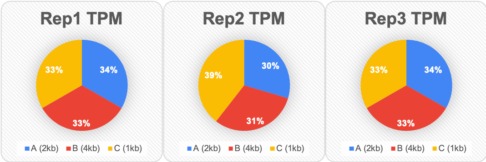

RPKM, FPKM, TPM이 무엇인가?
생물 정보학에서 굉장히 흔하게 접할 수 있는 용어 중 하나로 RPKM, FPKM, TPM이 있습니다.
RNA-seq의 발현 분석에서 normalized gene expression을 의미하는 것으로 초창기에는 RPKM이 많이 쓰였으나 FPKM을 거쳐 현재에는 TPM을 주로 사용하고 있습니다. (FPKM 또한 많이 사용중)
따라서 이 3가지 값을 계산하는 방법을 소개하려고 합니다. 아래 순서대로 이해하시면 됩니다.
먼저 A, B, C, D라는 4개의 gene과 3개의 replicate를 가지고 있는 테이블이 있습니다. gene 옆에 있는 kb(kilobase)는 gene의 길이입니다.
| Gene Name | Rep1 Counts | Rep2 Counts | Rep3 Counts |
|---|---|---|---|
| A (2kb) | 10 | 12 | 30 |
| B (4kb) | 20 | 25 | 60 |
| C (1kb) | 5 | 8 | 15 |
| D (10kb) | 0 | 0 | 1 |
Rep3를 보면 gene에 상관없이 다른 replicate들보다 많은 reads를 가진 것을 알 수 있습니다. 이는 sequencing depth가 다른 replicate들보다 높다는 걸 의미합니다. 이제 이걸 normalize(정규화) 할 것입니다.
또한 gene B는 gene A에 2배에 해당하는 ‘길이’를 가지고 있고, 이건 replicate에 상관없이 2배 많은 reads를 가지고 있다는 것을 설명하는 것일 수도 있습니다. 우리는 이것도 정규화해보려고 합니다.
RPKM
RPKM은 single-end RNA-seq용으로 제작되었습니다. 먼저 사자성어 풀이하듯 각 알파벳의 의미를 먼저 살펴보겠습니다. Reads Per Kilobase per Millions mapped reads
그러면 이게 무슨 뜻이냐…하면 전체 유전자의 길이를 Kilobase(=1000 base pair)로 정규화했을 때 전체 reads 중에서 해당 gene에 mapping된 reads들을 말합니다. 그런데 이 수는 너무 적기 때문에 106을 곱해주게 됩니다.
즉 FPKM은 total (1)reads에서 gene에 매핑된 리드들 나눈 값, (2) gene의 전체 길이를 1000으로 나눈 값, (3)106을 곱해주면 됩니다.

즉, gene 단위의 expression입니다.
이해가 잘 안되신다면 직접 계산해볼까요?
| Gene Name | Rep1 Counts | Rep2 Counts | Rep3 Counts |
|---|---|---|---|
| A (2kb) | 10 | 12 | 30 |
| B (4kb) | 20 | 25 | 60 |
| C (1kb) | 5 | 8 | 15 |
| D (10kb) | 0 | 0 | 1 |
먼저, (1) read depth를 정규화합니다.
- 각각의 replicate들에서 총 reads의 수를 계산합니다.
| Gene Name | Rep1 Counts | Rep2 Counts | Rep3 Counts |
|---|---|---|---|
| Total reads | 35 | 45 | 106 |
- 이 Total reads를 106으로 나누어야 하는데 보기 쉽게 10으로만 나눠보겠습니다.
| Gene Name | Rep1 Counts | Rep2 Counts | Rep3 Counts |
|---|---|---|---|
| Tens of reads | 3.5 | 4.5 | 10.6 |
따라서 이 값들은 각 replicate들에 대한 “per million” scaling factors입니다. 그러니까 우리는 각 gene의 read counts을 이 값들로 나누어야 합니다. 그러면 우리는 reads per million을 계산할 수 있는데 이를 RPM이라고 해보죠.
| Gene Name | Rep1 RPM | Rep2 RPM | Rep3 RPM |
|---|---|---|---|
| A (2kb) | 2.86 | 2.67 | 2.83 |
| B (4kb) | 5.71 | 5.56 | 5.66 |
| C (1kb) | 1.43 | 1.78 | 1.42 |
| D (10kb) | 0 | 0 | 0.09 |
두 번째 단계는 (2) gene length로 정규화하는것입니다. 각 replicate의 counts를 gene length(Kilobase)로 나누면 됩니다. 쉽죠? 그러면 아래의 테이블이 나오게 됩니다.
| Gene Name | Rep1 RPKM | Rep2 RPKM | Rep3 RPKM |
|---|---|---|---|
| A (2kb) | 1.43 | 1.33 | 1.42 |
| B (4kb) | 1.43 | 1.39 | 1.42 |
| C (1kb) | 1.43 | 1.78 | 1.42 |
| D (10kb) | 0 | 0 | 0.009 |
자 그러면 우리는 RPKM을 가지게 되었습니다.
정리해볼까요?
우리는 depth와 gene length을 정규화하지 않은 데이터를 가지고 있었습니다.
| Gene Name | Rep1 Counts | Rep2 Counts | Rep3 Counts |
|---|---|---|---|
| A (2kb) | 10 | 12 | 30 |
| B (4kb) | 20 | 25 | 60 |
| C (1kb) | 5 | 8 | 15 |
| D (10kb) | 0 | 0 | 1 |
하지만 우리는 이제 각각의 sequencing depth와 각각의 gene length에 대해 정규화해서 각각의 replicate와 각각의 gene에 대한 RPKM 데이터를 가지게 되었습니다.
| Gene Name | Rep1 RPKM | Rep2 RPKM | Rep3 RPKM |
|---|---|---|---|
| A (2kb) | 1.43 | 1.33 | 1.42 |
| B (4kb) | 1.43 | 1.39 | 1.42 |
| C (1kb) | 1.43 | 1.78 | 1.42 |
| D (10kb) | 0 | 0 | 0.009 |
FPKM
RPKM과 유사한 이름을 가지고 있는 FPKM은 Fragment Per Kilobase of transcript per Million mapped reads의 약자입니다. paired-end로 RNA-seq을 하면 하나의 fragment에서 2개의 read가 나옵니다. (RPKM의 무조건 2배가 되는건 아닙니다) 이는 transcript 관점의 expression으로 볼 수 있습니다.

RPKM과 FPKM의 차이점은 FPKM은 두개의 reads가 하나의 fragment에 mapping된다는 점을 고려한다는 것입니다.
TPM
TPM은 Transcripts Per Million의 약자로 FPKM, RPKM과 유사한 개념이지만 transcript length의 분포까지 포함한 개념이라고 합니다.
TPM을 계산하는 방법 아래와 같습니다.
RPKM / Total RPKM * 10^6
흠.. 같이 봐볼까요?
| Gene Name | Rep1 Counts | Rep2 Counts | Rep3 Counts |
|---|---|---|---|
| A (2kb) | 10 | 12 | 30 |
| B (4kb) | 20 | 25 | 60 |
| C (1kb) | 5 | 8 | 15 |
| D (10kb) | 0 | 0 | 1 |
먼저 (1) 각 replicate의 counts를 gene length로 나눕니다. 그러면 아래의 테이블이 나오겠죠? RPK는 Reads Per Kilobase라는걸 알 수 있습니다.
| Gene Name | Rep1 RPK | Rep2 RPK | Rep3 RPK |
|---|---|---|---|
| A (2kb) | 5 | 6 | 15 |
| B (4kb) | 5 | 6.25 | 15 |
| C (1kb) | 5 | 8 | 15 |
| D (10kb) | 0 | 0 | 0.1 |
두 번째 단계로 (2) sequencing depth로 정규화하는 것입니다. 우리가 gene lengh을 정규화한 것들의 합(각 replicate read counts의 합)과 각 replicate의 RPK 수를 합하고 (원래는 10^6으로 나눠야 하지만) 10으로 나눈 Tens of RPK를 사용할 것입니다.
| Gene Name | Rep1 RPK | Rep2 RPK | Rep3 RPK |
|---|---|---|---|
| Total RPK | 15 | 20.25 | 45.1 |
| Tens of RPK | 1.5 | 2.025 | 4.51 |
각 replicate의 counts를 Tens of RPK로 나누게 되면 TPM이 완성됩니다.
| Gene Name | Rep1 TPM | Rep2 TPM | Rep3 TPM |
|---|---|---|---|
| A (2kb) | 3.33 | 2.96 | 3.326 |
| B (4kb) | 3.33 | 3.09 | 3.326 |
| C (1kb) | 3.33 | 3.95 | 3.326 |
| D (10kb) | 0 | 0 | 0.02 |
그래서 이게 뭘 의미하는데?
그렇죠 계산하는 방법만 알면 다가 아니죠. 이 둘(RPKM과 TPM)이 뭐가 다른지 알아야겠지요. RPKM과 TPM을 비교해봅시다.
RPKM
| Gene Name | Rep1 RPKM | Rep2 RPKM | Rep3 RPKM |
|---|---|---|---|
| A (2kb) | 1.43 | 1.33 | 1.42 |
| B (4kb) | 1.43 | 1.39 | 1.42 |
| C (1kb) | 1.43 | 1.78 | 1.42 |
| D (10kb) | 0 | 0 | 0.009 |
| Total | 4.29 | 4.5 | 4.25 |
TPM
| Gene Name | Rep1 TPM | Rep2 TPM | Rep3 TPM |
|---|---|---|---|
| A (2kb) | 3.33 | 2.96 | 3.326 |
| B (4kb) | 3.33 | 3.09 | 3.326 |
| C (1kb) | 3.33 | 3.95 | 3.326 |
| D (10kb) | 0 | 0 | 0.02 |
| Total | 10 | 10 | 10 |
위 결과들은 같은 데이터에서 나온 RPKM과 TPM 값입니다. 둘 다 gene length와 sequencing depth의 편향(bias)이 일치합니다. 하지만 각 column에 대한 정규화된 총 reads는 매우 다릅니다.
- RPKM은 각 sample마다 다른 값을 얻었습니다.
- TPM은 각 column마다 같은 값을 얻었습니다.
왜 이 차이가 중요한지 봐봅시다.
Comparison among TPMs

Comparison among RPKMs…?

감이 오시나요?
TPM은 모든 replicate에 대하여 총 count 수가 보정되었기 때문에 각 gene에 어떤 비율로 reads가 있는지 알 수 있습니다. 예를 들어 Rep1의 gene A는 33%라고 알 수 있습니다. 그리고 이를 통해 Rep2의 gene A와 비교하였을 때 Rep1의 gene A가 Rep2의 gene A보다 약간 크다고 알 수 있습니다. 이는 Rep1의 gene A에 맵핑된 양이 Rep3의 gene A에 맵핑된 양보다 미세하게 더 많다는 걸 알 수 있습니다.
하지만 RPKM은 각각의 replicate가 다른 total reads를 가지기 때문에 각각의 replicate의 gene을 비교하기 어렵습니다. 이 말은 각각의 gene의 reads 수를 비교하기 어렵다는 말이 됩니다.
따라서
sample들 안에서 맵핑되는 reads의 비율을 보다 명확하게 말해주는 TPM을 사용하기를 추천드립니다.